Husky Dual UR5 Mobile Manipulation Demo (Simulation)¶
Introduction¶
Note
This tutorial assumes you have ROS Indigo installed, Gazebo, RViz, and a computer that is able to handle simulations and inverse kinematics. If you wish to work with the real Clearpath Robotics Dual UR5 Husky, please see www.clearpathrobotics.com.
The Husky dual UR5 is an out of the box solution to dual arm mobile manipulation! It comes installed with all associated ROS drivers, as well as a MoveIT! configuration for both arms. We’re also able to add whatever sensors you may require for your research needs!
Installation¶
On a real platform purchased from Clearpath Robotics AND in Simulation
If you have the Dual UR5 integration setup from Clearpath Robotics, you may use this tutorial to revert your Husky’s workspace back to a working state. This tutorial can also be used to run the simulator of this platform without purchase.
All of the packages used in this demo can be found at https://github.com/DualUR5Husky
mkdir -p ~/dual_ws/src
cd ~/dual_ws/src && catkin_init_workspace
git clone https://github.com/DualUR5Husky/husky
git clone https://github.com/DualUR5Husky/ur_modern_driver
git clone https://github.com/DualUR5Husky/universal_robot
git clone https://github.com/DualUR5Husky/robotiq
git clone https://github.com/DualUR5Husky/husky_simulator
git clone https://github.com/DualUr5Husky/flir_ptu
cd ..
If there are outstanding dependencies, you may install them using
sudo apt-get update
rosdep install --from-paths src --ignore-src --rosdistro=indigo -y
Finally build your workspace using
catkin_make install
source ~/dual_ws/devel/setup.bash
Usage:¶
The dual UR5 Husky is easy to start working with! All the packages you’ll need are conveniently located in one place, and there’s no need to worry about setting parameters or customer configuration. Just follow the steps below to bring up the robot’s simulation environment, afterwards, we’ll get into how to move your new robot!
roslaunch husky_gazebo husky_empty_world.launch
The terminal screen should report no errors and look like this:
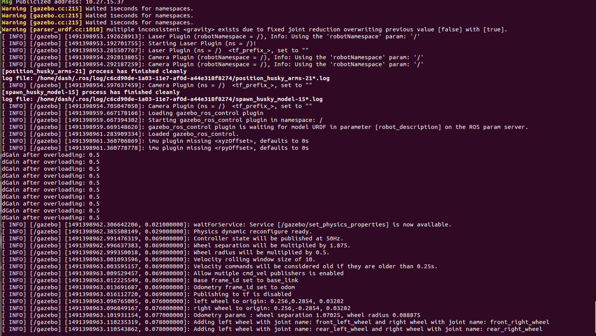Gazebo should pop up now. The arms will go through some movement behaviours to rest them back at their home position, and then the robot should look like this:
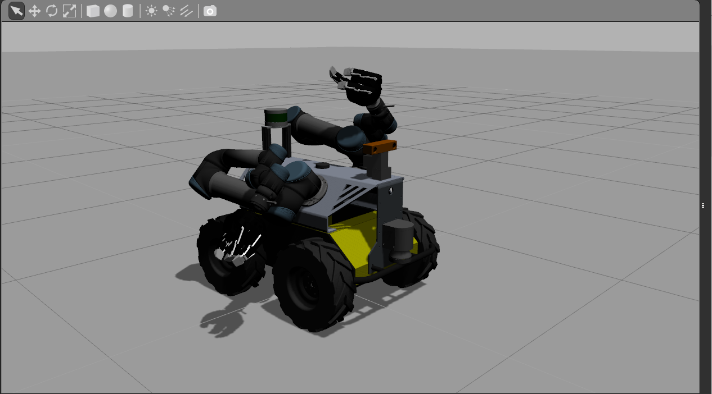To launch the interact with the robot within Rviz, open a new terminal, source your workspace once again, and laucnh the moveit interface:
source ~/dual_ws/devel/setup.bash
roslaunch husky_dual_ur5_moveit_config demo.launch
and the Rviz screen will appear:
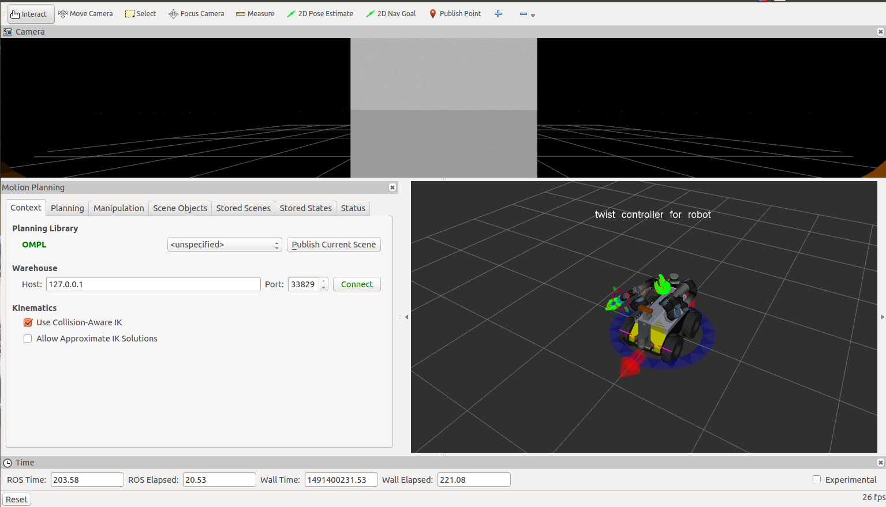This custom rviz configuration has three views by default. The top most view is the camera feed coming from the bumblebee with respect to the robots frame. The bottom left view is the MoveIt! planning plugin pipeline. The one in the bottom right is the visualization of the robot state. Dragging the orbs around the arm will allow you to position the arm any way you want.
Try dragging the arm around:
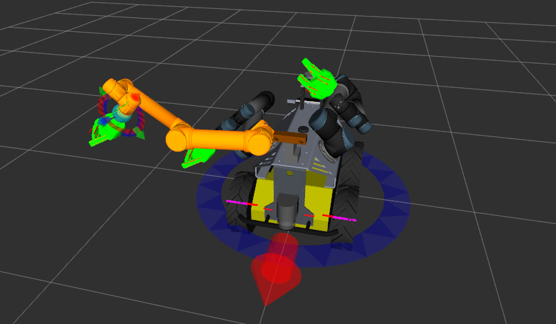To get the arm to finally plan and execute its position in Gazebo, use the motion planning plugin:
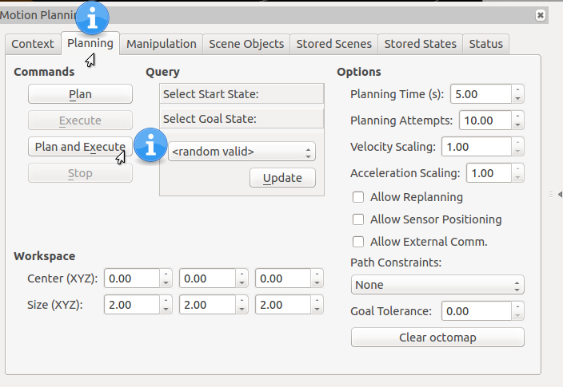DISCLAIMER: If you experience problems planning. Check the “Status” tab of the MoveIt! plugin in RViz. If there are any detected collisions, you will have to disable them inside the config/husky.srdf file. If you copy and paste the text from the status output and put it inside a text file, you can generate some xml using the generate_collisions.py script. Otherwise, read the husky.srdf and find the disable_collision tags, it will be pretty straightforward what to add.
The arm should be fully extended in Gazebo (or to wherever you specified to move it)
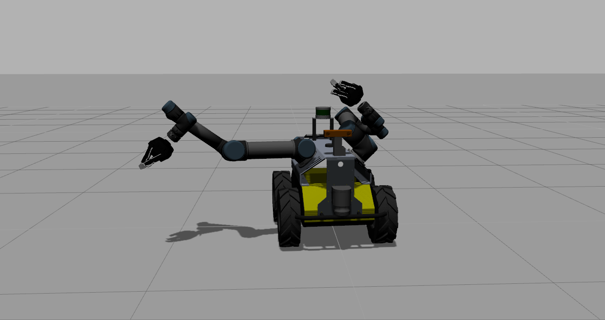To move the other arm, open up the planning window to change the “Planning Request” name. Go to Rviz’s top menu bar and find “Panels” and then select “Displays” which will open another window in the Rviz screen:
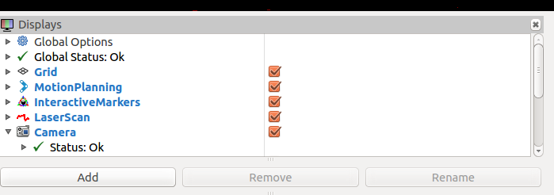Click on “MotionPlanning” and expand it down and find the “Planning Request” drop down. Change it to “left_arm” and notice the orb moves to the left arm so you can position that.
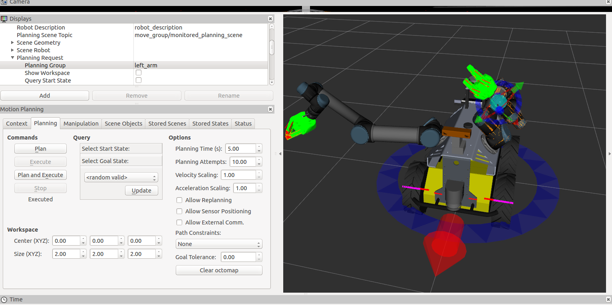Clicking “plan and execute” also works once you move it, you will see it move in Gazebo. Note sometimes it may fail, you will just have to plan and execute again if it doesn’t find a path the first time.
The final position of the arms in Gazebo after execution:
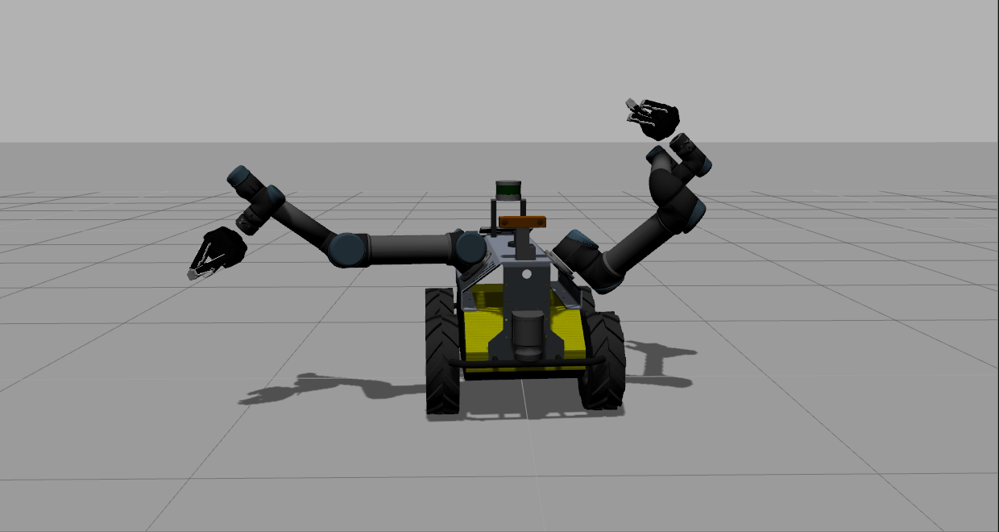Controlling The Grippers¶
The grippers are controlled (from an end user perspective), by a neat little script made by Robotiq. Run this command to bring up the gripper controller. Change topic:= to either /left_hand/ or /right_hand/ depending on which gripper you want to move.
rosrun robotiq_s_model_control SModelSimpleController.py _topic:=/left_hand/command
An interactive command line should come up:
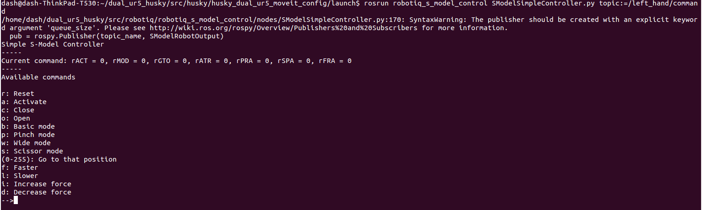typing “a” will activate it, and then “o” will open it. It should look like this:
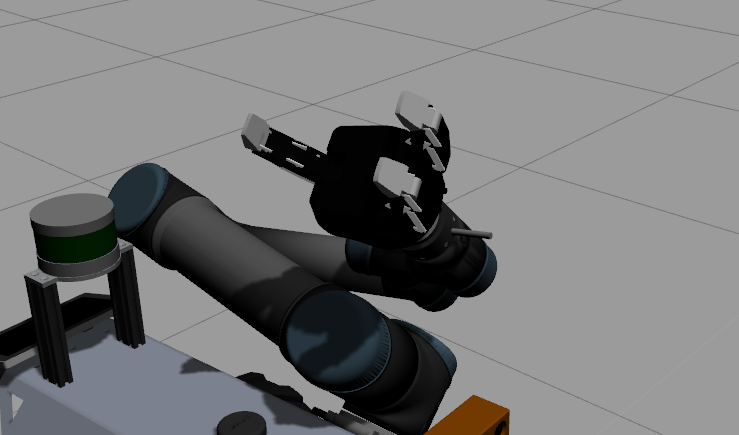typing “p” will pinch it close like so
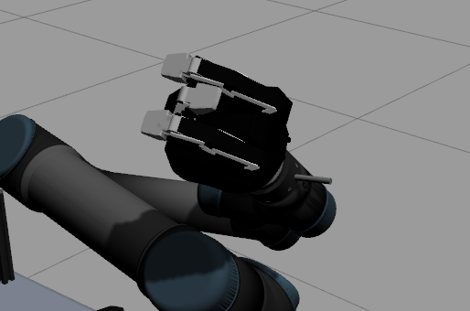